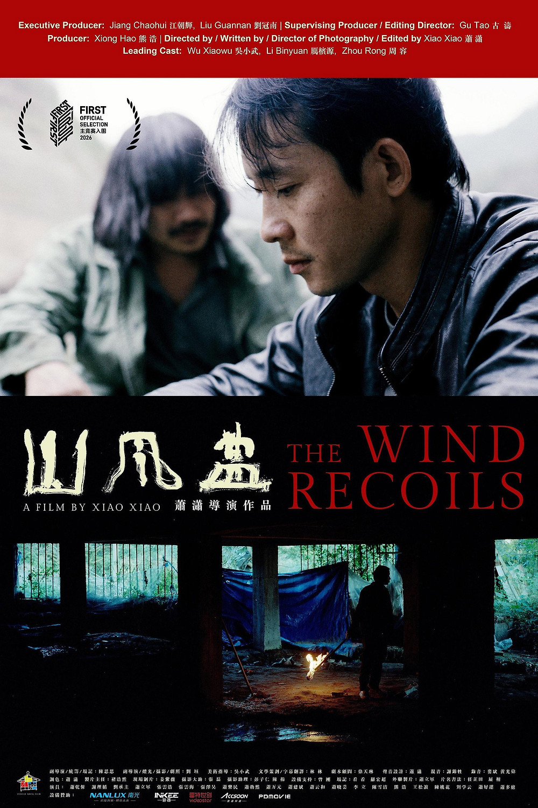

The Wind Recoils
山风蛊
A forensic doctor returns to his remote mountain hometown, where old superstitions and I Ching divination intertwine with a criminal investigation. Xiao Xiao's narrative feature debut after his acclaimed documentary work.
Director / Writer / DP / Editor: Xiao Xiao (萧潇)
Previous work: Turtle Rock (IDFA 2017)
Previous work: Turtle Rock (IDFA 2017)
Festival Selections
FIRST IFF 2026 Main Competition · 9th Nara International Film Festival (2026) · Lumen Rio IFF (2026)